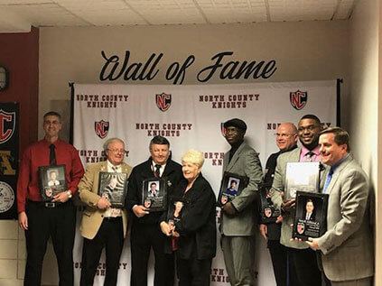

I was asked that very question at a recent public event, and I responded with a question of my own. I asked, “Why do you think I decided to run?” The answer from this person was simple.
“You decided to run for the kids.”
That is precisely why.
We are at a critical time during this transitional period from an appointed to an elected school board. I have the experience, the knowledge and hopefully the wisdom to be a productive member of the Anne Arundel County Board of Education from the very first day.
I am a product of the Anne Arundel County Public School system, having graduated from Park Elementary, Brooklyn Park Elementary and Brooklyn Park Junior/Senior High School. I attended Anne Arundel Community College and Towson State University and graduated with a degree in Secondary Education. I am also a veteran, having served 6 years in the United States Army Reserves from 1967 to 1972, training to operate amphibious craft.
I began my teaching career at Southern Junior High School in September of 1972. Two years later I became Department Chairperson of the World Classical Language Department at Brooklyn Park Junior/Senior High School. When Brooklyn Park merged with Andover High School in 1990, I was chosen as the Chairperson of the World Classical Language Department. I am the only remaining original teacher at North County High School. In November of 2019 I was inducted into the North County Hall of Fame, the first class of people to be honored for their dedication to the school.
During my teaching career I have also been involved in our sports programs. I was a basketball coach for 15 years, and I became the “Voice of the Bees” for Brooklyn Park High School and later the “Voice of the Knights” after we opened in 1990. As “Voice of the Knights” I announce football, basketball, lacrosse, soccer and other sports when needed, a job which I still enjoy.
For over 15 years I have also been the main TAAAC representative for the North County staff and I serve as the chairperson on the North County High School Faculty Council. The Faculty Council exists by contract as a group of teachers to meet with the principal on a monthly basis in order to advise the principal about any important school matters or concerns. Additionally, I serve on the TAAAC High School Concerns Committee, which meets monthly to discuss specific concerns for high schools, and I have been the chair of the committee for the past 5 years. Finally, I serve on the ASI-TAAAC Advisory Group which meets monthly with BOE staff to discuss high school concerns, particularly of an instructional nature. This is an important collaborative group that I have been honored to be a part of for over 5 years.
I have always made decisions based upon what is in the best interest of my students and sometimes that is a difficult thing to do. My decision must be based not only on what they want, but also on what will benefit them the most as they pursue their education in our schools. I do have experience with a later start time and my mind is open. The health and well being of our students are, of course, of utmost importance. Any decision I make will always be based on their well-being. As always, there must be communication and collaboration with all stakeholders, including the students we serve. I strongly recommend that all students be surveyed in order to give them the opportunity to voice their opinions and to express their concerns.
All parents and guardians have the expectation that their children are safe in school. This must be one of our first priorities. Any investment we make in the safety of our students and staff is a good investment. We need to be proactive rather than reactive and we need to continue to find ways to guarantee the safety of everyone. Through positive collaboration and cooperation with one another, we can make a difference.
Students need to experience learning situations which are relevant to the world in which they live. Students in today’s world need to be able to actively participate in the learning experience and ultimately be able to show us that they can apply the concepts that they have learned. As a member of the Board of Education, I would like to see an increased level of communication between teachers and staff so that the curriculum our students experience will better prepare them for their life after graduation.
Over the course of my 48 years as a teacher in Anne Arundel County, I must say that I was treated well in terms of step increases and pay increases and bonuses. The same cannot be said for many staff members in this county. It is the responsibility of all stakeholders to work together to make it happen. This requires a full and complete understanding of the impact of lost steps on all staff. Some were impacted much more negatively than others. A fair and just solution must be found by collaboration among the stakeholders involved. I have total confidence that such a solution will be found. As a member of the Board of Education I will advocate for fair and equitable compensation for all staff.
For many years I have advocated for additional staff to help our students who struggle with mental health concerns. We can be proactive in this area by providing all students access to mental health services through guidance counselors, PPW workers and social workers. Additional county resources are also available. We need to make sure that these services are provided to all students. As a member of the Board of Education, I will advocate for training for all so that everyone knows what to do when someone is in crisis. I will continue to support additional staff to guarantee mental health safety for everyone.
We must continue to collaborate with the communities involved and the County Council and the County Executive as well as our local and state politicians to continue to plan for the future of Anne Arundel County Public Schools. As a member of the Board of Education I will reach out to communities to make sure that we have a good understanding of the needs for new construction and maintenance of existing buildings.
By proceeding you confirm that the following statements are true and accurate:
Maryland Contribution Terms:
Maximum contribution for individuals, PACs, corporations and labor organizations is $6,000 per candidate per election cycle. Maximum aggregate contribution to all candidates is $24,000 per year per election cycle. State law requires that we collect and report name, address, occupation, and employer of each contributor. Contributions from foreign nationals are prohibited by law. Donations are not deductible as charitable donations for federal or state income tax purposes.
contact@robertsilkworth.com
endorsements@robertsilkworth.com